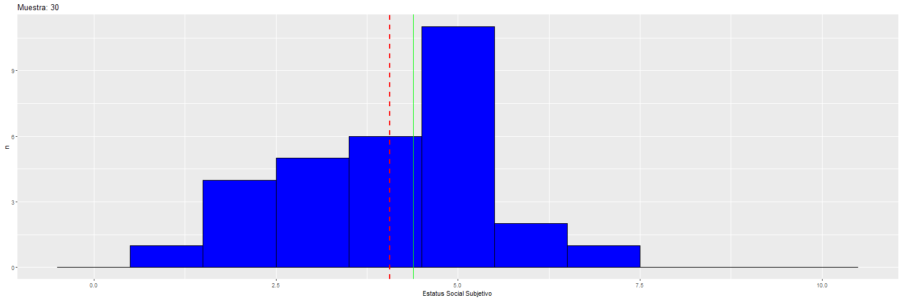
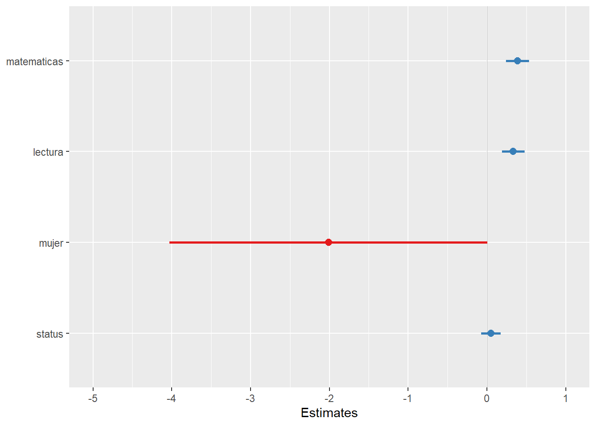

library(dplyr)
load(url("https://multivariada.netlify.app/assignment/data/proc/ELSOC_ess.RData")) # Cargar base de datos
set.seed(123)
elsoc_n30 <- sample_n(tbl = elsoc_18,size = 30 ) %>% mutate(dataset=30 ,mean_ess=mean(ess,na.rm = T))
elsoc_n50 <- sample_n(tbl = elsoc_18,size = 50 ) %>% mutate(dataset=50 ,mean_ess=mean(ess,na.rm = T))
elsoc_n75 <- sample_n(tbl = elsoc_18,size = 75 ) %>% mutate(dataset=75 ,mean_ess=mean(ess,na.rm = T))
elsoc_n100 <- sample_n(tbl = elsoc_18,size = 100) %>% mutate(dataset=100,mean_ess=mean(ess,na.rm = T))
elsoc_n200 <- sample_n(tbl = elsoc_18,size = 200) %>% mutate(dataset=200,mean_ess=mean(ess,na.rm = T))
elsoc_n300 <- sample_n(tbl = elsoc_18,size = 300) %>% mutate(dataset=300 ,mean_ess=mean(ess,na.rm = T))
elsoc_n400 <- sample_n(tbl = elsoc_18,size = 400) %>% mutate(dataset=400,mean_ess=mean(ess,na.rm = T))
elsoc_n700 <- sample_n(tbl = elsoc_18,size = 700) %>% mutate(dataset=700,mean_ess=mean(ess,na.rm = T))
elsoc_n800 <- sample_n(tbl = elsoc_18,size = 800) %>% mutate(dataset=800,mean_ess=mean(ess,na.rm = T))
elsoc_n900 <- sample_n(tbl = elsoc_18,size = 900) %>% mutate(dataset=900,mean_ess=mean(ess,na.rm = T))
elsoc_n1000<- sample_n(tbl = elsoc_18,size = 1000) %>% mutate(dataset=1000,mean_ess=mean(ess,na.rm = T))
elsoc_n1500<- sample_n(tbl = elsoc_18,size = 1500) %>% mutate(dataset=1500,mean_ess=mean(ess,na.rm = T))
elsoc_n2000<- sample_n(tbl = elsoc_18,size = 2000) %>% mutate(dataset=2000,mean_ess=mean(ess,na.rm = T))
elsoc_n2500<- sample_n(tbl = elsoc_18,size = 2500) %>% mutate(dataset=2500,mean_ess=mean(ess,na.rm = T))
# elsoc <- elsoc_18 %>% mutate(dataset=3703,mean_ess=mean(ess,na.rm = T))
fullmat<- bind_rows(elsoc_n30 ,elsoc_n50 ,elsoc_n75 ,elsoc_n100,elsoc_n200,elsoc_n300,elsoc_n400,elsoc_n700,elsoc_n800,elsoc_n900,elsoc_n1000,elsoc_n1500,elsoc_n2000,elsoc_n2500)
fullmat <- fullmat %>% mutate(mean_ssta=mean(elsoc_18$ess,na.rm = T))Práctico 03. Regresión múltiple e inferencia
Métodos estadísticos para Ciencias Sociales III
Inferencia
Una de las ideas fundamentales de la inferencia es determinar si nuestros análisis estadísticos pueden ser extrapolados a la población que estamos estudiando. En el contexto de regresión, esto se traduce en la significación estadística del coeficiente \(\beta\), lo que es distinto del tamaño del efecto del \(\beta\). Por ejemplo, podemos tener un \(\beta\) de tamaño 3, pero eso no nos dice nada todavía sobre si es estadísticamente significativo.
Entonces, la pregunta central de inferencia en regresión es: ¿Es nuestro coeficiente \(\beta\) estadísticamente significativo?
La significación estadística se refiere a poder afirmar si el \(\beta\) es distinto de cero en la población. Esta afirmación se puede realizar con un cierto nivel de probabilidad de error p, donde el concepto central es el error estándar.
Error estándar (SE) y tamaño muestral
El error estándar (SE, por su sigla en inglés) es un concepto central en inferencia ya que nos permite aseverar con un grado de probabilidad de error si nuestro coeficiente existe en la población (o en otras palabras, que nuestro coeficiente es distinto de cero en la población).
El ejemplo más simple para dar cuenta del error estándar es relativo al promedio: podemos calcular el promedio de la muestra, pero no sabemos con certeza si este promedio corresponde al de la población. Podríamos hacer una estimación más apropiada si extrajéramos varias muestras de datos, obtuviéramos el promedio de cada una y calcularamos una desviación estándar de estos promedios. Esta es justamente la idea detrás del cálculo del error estándar: entregar un posible rango de variación del promedio en la población (sumando y restando errores estándar al promedio). Y para ello, hacemos referencia a la distribución normal, que nos dice que aproximadamente el 68% de los valores se encuentran a +/- 1 SE y un 95% de los valores a +/- 2 SE.
Pero claramente es muy costoso extraer varias muestras y en general trabajamos con una; por ello, se utiliza una fórmula de SE para una muestra basada en el teorema central del límite, que nos dice (para el caso del promedio) que \(SE_{\bar{x}}\frac{s}{\sqrt{N}}\) donde \(s\) es la desviación estándar y \(N\) es el tamaño de la muestra.
Ahora, como N está en el denominador, en la medida que aumente el N de la muestra, el error estándar será más pequeño. Esto es relevante saberlo, ya que un promedio o también un \(\beta\) puede ser o no estadísticamente significativo según el tamaño muestral, y por lo tanto el tamaño del coeficiente no está relacionado directamente con su significación estadística.
Ejemplo
Supongamos que nuestra muestra de 3703 casos en realidad corresponde a la Población, de modo tal que vamos a extraer 14 muestras aleatorias de distinto tamaño a modo de ilustrar cambios en la estimación en la medida que aumenta el tamaño muestral.
Luego de obtener las muestras, calculamos la media, desviación estándar y error estándar para cada una de ellas:
tab_full<- fullmat %>% group_by(dataset) %>% summarise(mean=mean(ess,na.rm = T), sd=sd(ess,na.rm = T),SE=sd/sqrt(n()))
tab_full# A tibble: 14 × 4
dataset mean sd SE
<dbl> <dbl> <dbl> <dbl>
1 30 4.07 1.41 0.258
2 50 4.58 1.59 0.225
3 75 4.39 1.60 0.185
4 100 4.4 1.49 0.149
5 200 4.46 1.47 0.104
6 300 4.3 1.55 0.0893
7 400 4.36 1.58 0.0789
8 700 4.35 1.62 0.0611
9 800 4.38 1.54 0.0544
10 900 4.36 1.58 0.0525
11 1000 4.40 1.57 0.0498
12 1500 4.39 1.56 0.0403
13 2000 4.42 1.56 0.0349
14 2500 4.38 1.58 0.0317Es posible observar que tanto la media como la desviación estándar van cambiando en la medida que aumenta el tamaño de la muestra, pero si observamos el error estándar, este va sistemáticamente disminuyendo en la medida que aumenta el tamaño muestral.
Para ilustrar cómo va cambiando la dispersión y la media “muestral” (rojo) con respecto a la “poblacional” (verde), se puede observar el siguiente gráfico:

Por lo tanto, el valor del error estándar depende del tamaño de la muestra, y por lo tanto el tamaño de la muestra va a afectar la significación estadística de los coeficientes de regresión.
Inferencia en regresión
En regresión nos interesa saber si las diferencias en Y con respecto a los distintos niveles o valores de X son significativas, es decir estadísticamente distintas de 0 con un cierto nivel de probabilidad.
Para poder calcular la probabilidad de error nos basamos en una distribución teórica, que es la distribución normal en su versión ajustada al tamaño muestral: la distribución T. Esta distribución nos permite obtener un valor de contraste o valor crítico para un cierto nivel de probabilidad de error (por ejemplo, p=0.05), con el cual contrastamos el T obtenido en nuestra estimación.
Por lo tanto, para esto se requiere:
- calcular el T de cada \(\beta\) de regresión
- establecer un nivel de probabilidad de error (ej: p=0.05, para un 95% de confianza)
- calcular el valor crítico
- contrastar: si T > valor crítico T, entonces se puede establecer que el coeficiente es estadísticamente significativo con una probabilidad de error p<0.05. O alternativamente, se rechaza la hipótesis nula (que nos dice que \(\beta=0\)) con un 95% de confianza.
Todos estos pasos son realizados automáticamente mediante software de estimación (como R), pero vamos a hacerlo paso a paso en un ejemplo mínimo (=pocos datos) con los datos de la práctica 3 de regresión simple:
datos <- read.csv("https://multivariada.netlify.app/slides/03-regsimple1/tacataca.txt", sep="")
Tenemos entonces tres columnas:
id: número único que identifica a cada sujetojuegos_x: número de veces que ha jugado previamentepuntos_y: numero de puntos que obtuvo en el juego actual
Estimamos el modelo de regresión y vemos los resultados:
reg1 <-lm(puntos_y ~ juegos_x, data = datos)
stargazer::stargazer(reg1, type = "text")
===============================================
Dependent variable:
---------------------------
puntos_y
-----------------------------------------------
juegos_x 0.500***
(0.132)
Constant 2.500***
(0.458)
-----------------------------------------------
Observations 23
R2 0.405
Adjusted R2 0.376
Residual Std. Error 1.091 (df = 21)
F Statistic 14.280*** (df = 1; 21)
===============================================
Note: *p<0.1; **p<0.05; ***p<0.01El \(\beta\) (calculado paso a paso en la Práctica 3) nos dice que por cada punto que aumenta la experiencia en juegos (X), el puntaje obtenido (Y) aumenta 0.5 puntos. Atendamos ahora a la información adicional de la tabla relacionada con inferencia:
- un número entre paréntesis bajo el \(\beta\), corresponde al error estándar
- tres asteriscos al lado del \(\beta\), que refieren al pie de la tabla donde el número de asteriscos (entre 1 y 3) se asocia a distintos niveles de probabilidad de error.
El error estándar del \(\beta\) o \(SE_{\beta}\) es lo que nos permite calcular T, ya que \(T=\beta / SE_{\beta}\). Existen diferentes alternativas para el cálculo de \(SE_{\beta}\), para el caso de este ejemplo con un predictor X continuo vamos a utilizar:
\[SE_{\beta}=\sqrt{\frac{ \frac{1}{N-2}-\sum(\hat{y}-y)²}{\sum(x-\bar{x})²}}\]
Donde en el numerador se encuentra la sumatoria de los residuos al cuadrado multiplicado por 1/N-2, y en el denominador es la suma de cuadrados de X. Para demostrar paso a paso la obtención de estos términos vamos a agregar una serie de columnas a nuestra base de datos:
#Variable de valores predichos
datos$estimado<- (2.5 + datos$juegos_x*0.5)
# Estimamos el residuo
datos$residuo <- datos$puntos_y - datos$estimado
# Estimamos los residuos al cuadrado
datos$residuo2 <- datos$residuo^2
# Y finalmente las diferencias de X del promedio
datos$xprom_x <- datos$juegos_x - mean(datos$juegos_x)
# ... al cuadrado
datos$xprom_x2 <- (datos$xprom_x)^2
datos id juegos_x puntos_y estimado residuo residuo2 xprom_x xprom_x2
1 1 0 2 2.5 -0.5 0.25 -3 9
2 2 0 3 2.5 0.5 0.25 -3 9
3 3 1 2 3.0 -1.0 1.00 -2 4
4 4 1 3 3.0 0.0 0.00 -2 4
5 5 1 4 3.0 1.0 1.00 -2 4
6 6 2 2 3.5 -1.5 2.25 -1 1
7 7 2 3 3.5 -0.5 0.25 -1 1
8 8 2 4 3.5 0.5 0.25 -1 1
9 9 2 5 3.5 1.5 2.25 -1 1
10 10 3 2 4.0 -2.0 4.00 0 0
11 11 3 3 4.0 -1.0 1.00 0 0
12 12 3 4 4.0 0.0 0.00 0 0
13 13 3 5 4.0 1.0 1.00 0 0
14 14 3 6 4.0 2.0 4.00 0 0
15 15 4 3 4.5 -1.5 2.25 1 1
16 16 4 4 4.5 -0.5 0.25 1 1
17 17 4 5 4.5 0.5 0.25 1 1
18 18 4 6 4.5 1.5 2.25 1 1
19 19 5 4 5.0 -1.0 1.00 2 4
20 20 5 5 5.0 0.0 0.00 2 4
21 21 5 6 5.0 1.0 1.00 2 4
22 22 6 5 5.5 -0.5 0.25 3 9
23 23 6 6 5.5 0.5 0.25 3 9Ahora obtenemos la suma de los residuos al cuadrado (residuo2) y la suma de las diferencias de promedio de X al cuadrado:
sum(datos$residuo2)[1] 25sum(datos$xprom_x2)[1] 68Reemplazamos en la fórmula:
\(SE_{\beta}=\sqrt{\frac{ \frac{1}{N-2}*\sum(\hat{y}-y)²}{\sum(x-\bar{x})²}}=\sqrt{\frac{ \frac{1}{23-2}*25}{68}}\)
Y realizamos el cálculo:
sqrt(((1/21)*25)/68 )[1] 0.132314Que es equivalente al valor entre paréntesis bajo el \(\beta\) en la tabla de regresión de arriba, y que corresponde al error estándar.
Con el error estándar, ahora calculamos T:
\(T=\frac{\beta}{SE_{\beta}}=\frac{0.5}{0.132}=3.787\)
Y ahora contrastamos este valor con el valor crítico de T, basado en la distribución T y que se obtiene de la tabla de valores correspondiente o de un software estadístico como R. Para esto necesitamos establecer el nivel deseado de probabilidad de error, convencionalmente p=0.05, y los grados de libertad (gl) que se calculan como N-k-1, donde k equivale al número de predictores (en este caso 1). Por lo tanto gl=23-1-1=21.
Y un tema adicional sobre el valor p: vamos a establecer un valor que considere tanto situaciones de coeficiente positivo como negativo (prueba de dos colas), que es la manera convencional para rechazar hipótesis nulas en el caso de regresión. Por lo tanto, para la búsqueda del valor crítico dividimos el p a la mitad (0.05/2), quedando entonces en 0.025.
Con p=0.025 y gl=21 obtenemos el valor crítico:
qt(0.975, 21)[1] 2.079614Nuestro valor T de 3.387 es mayor que el valor crítico de 2.07, por lo tanto podemos decir que nuestro beta es estadísticamente significativo con un 95% de confianza. Veamos ahora si podemos hacer esta afirmación con un mayor nivel de confianza: 99%. Para eso, calculamos la T de dos colas para un p=0.01/2=0.005, por lo tanto el valor crítico se calcula a partir de 0.995
qt(0.995, 21)[1] 2.83136En este caso, el T del \(\beta\) de nuestro modelo también es superior a este valor crítico (3.387>2.831), por lo que podemos decir que nuestro beta es estadísticamente significativo con un 99% de confianza. Alternativamente, que rechazamos la hipótesis nula (que dice que \(\beta=0\) en la población) con una probabilidad de error p<0.01. Esto se representa en la tabla de regresión con asteriscos al lado del \(\beta\), lo cual puede variar según la función que produzca la tabla. En la tabla de arriba generada con stargazer un nivel de probabilidad de error p<0.01 se representa con 3 asteriscos, pero otras funciones como la que veremos más adelante sjPlot::tab_model los dos asteriscos equivalen a p<0.01 y tres a p<0.001:
Intervalos de confianza
Otro concepto asociado con inferencia es el intervalo de confianza, que se obtiene sumando y restando errores estándar al \(\beta\) de regresión. Con esto no solo se obtiene un rango probable de variación del \(\beta\), sino que también es posible establecer falta de significancia estadística cuando el intervalo pasa por el valor 0. De esta manera, es una manera relacionada y complementaria de hacer análisis de inferencia además de la prueba T.
Para obtener el intervalo de confianza se suma/resta al \(\beta\) el error estándar por el valor crítico de T para el nivel de confianza correspondiente. En nuestro ejemplo, para un 95% de confianza el T crítico es 2.079, por lo tanto considerando el \(\beta\) de 0.5 y el error de 0.132:
0.5 - (2.079 * 0.132)[1] 0.2255720.5 + (2.079 * 0.132)[1] 0.774428Por lo tanto, podemos decir con un 95% de confianza que \(\beta\) varía entre 0.225 y 0.774, y que es estadísticamente significativo ya que el intervalo no pasa por cero, que es lo mismo que decir que es estadísticamente distinto de 0.
Toda esta información la podemos obtener en R con tablas como la siguiente:
sjPlot::tab_model(reg1,
show.se=TRUE,
digits=3,
p.style = "star")| puntos y | |||
| Predictors | Estimates | std. Error | CI |
| (Intercept) | 2.500 *** | 0.458 | 1.549 – 3.451 |
| juegos x | 0.500 ** | 0.132 | 0.225 – 0.775 |
| Observations | 23 | ||
| R2 / R2 adjusted | 0.405 / 0.376 | ||
| * p<0.05 ** p<0.01 *** p<0.001 | |||
A continuación más detalles de generación de tablas e interpretación
Reporte e interpretación
En esta sección se presenta un ejemplo de análisis e interpretación de una tabla de regresión múltiple, que puede servir como referencia para la entrega de los informes 2 y 3. El ejemplo está adaptado de https://stats.idre.ucla.edu/stata/output/regression-analysis/
Librerías
if (!require("pacman")) install.packages("pacman") # instalar pacman
pacman::p_load(dplyr,readxl, summarytools, stargazer, webshot, equatiomatic)Datos
Los datos a utilizar corresponden a resultados de pruebas de conocimiento en distintas areas de 200 estudiantes de educación secundaria.
data <- read.csv("https://multivariada.netlify.app/assignment/data/hsb2.csv")Directorio de trabajo :Directorio de trabajo
Para el trabajo de análisis de datos se recomienda establecer claramente el directorio de trabajo, es decir, la carpeta que contiene los archivos de datos, los códigos y los resultados. Esta carpeta es el lugar donde uno se posiciona para hacer los análisis, llamar otros archivos y exportar archivos. De otra manera, todos los archivos necesarios para el análisis se encuentran en esta carpeta, lo que se conoce como carpeta autocontenida.
Para esto, varias opciones:
- en RStudio, Session > Set Working Directory > Choose Directory
- también vía consola con el comando
setwd(ruta-hacia-la-carpeta-local) - o también se puede trabajar en un directorio contenido o cerrado con la función de Rprojects
Si se quiere verificar en qué carpeta se está trabajando, comando getwd()
Con esto entonces, si los datos están guardados en la misma carpeta, entonces se llaman simplemente data <-read.csv("hsb2.csv"). No se requiere dar la ruta completa justamente porque el programa ya sabe dónde uno está posicionado. Asimismo, al momento de guardar/exportar algún resultado, automáticamente quedará en la carpeta de trabajo.
Si los datos (o otro archivo que se quiera llamar) no se encuentran en el directorio raíz sino en una subcarpeta, entonces se le indica la ruta de la siguiente manera; ejemplo con datos guardados en subdirectorio “datos”: data <-read.csv("datos/hsb2.csv")
Ajustes y descriptivos
Primero seleccionamos las variables que vamos a usar en el ejemplo y cambiamos las etiquetas de las variables a español.
names(data) [1] "id" "female" "race" "ses" "schtyp" "prog" "read"
[8] "write" "math" "science" "socst" data <- data %>% select (science,math,female, socst, read)
data <- data %>% rename(ciencia=science, matematicas =math, mujer=female, status=socst, lectura=read)view(dfSummary(data, headings=FALSE))| No | Variable | Stats / Values | Freqs (% of Valid) | Graph | Valid | Missing | |||||||||||||||
|---|---|---|---|---|---|---|---|---|---|---|---|---|---|---|---|---|---|---|---|---|---|
| 1 | ciencia [integer] |
|
34 distinct values |  |
200 (100.0%) | 0 (0.0%) | |||||||||||||||
| 2 | matematicas [integer] |
|
40 distinct values |  |
200 (100.0%) | 0 (0.0%) | |||||||||||||||
| 3 | mujer [integer] |
|
|
 |
200 (100.0%) | 0 (0.0%) | |||||||||||||||
| 4 | status [integer] |
|
22 distinct values |  |
200 (100.0%) | 0 (0.0%) | |||||||||||||||
| 5 | lectura [integer] |
|
30 distinct values |  |
200 (100.0%) | 0 (0.0%) |
Generated by summarytools 1.0.1 (R version 4.3.2)
2025-08-25
Grabar / exportar tablas :Exportar tablas
Muchas de las tablas producidas con R son en formato html, es decir, archivos para ser publicados en formato web. Por lo tanto, en caso de querer pegar esa imagen en un documento tipo Word hay que hacer un paso intermedio. Una posibilidad es hacer una captura de pantalla del visor de R, pero también se puede generar una imagen desde R con la librería webshot.
Para eso, el procedimiento en general es:
- generar un archivo html de la imagen (output) generado por R
- guardar una imagen de ese archivo
Ejemplo, para tablas generadas con summarytools (como la de dfSummary):
print(dfSummary(data, headings = FALSE), file = "tabla_desc.html") # esto genera un html
webshot("tabla_desc.html","tabla_desc.png") # esto genera la imagenPara tablas generadas con stargazer
stargazer(reg1, type="html", out = "reg1.html")
webshot("reg1.html","reg1.png")Y para tablas de regresión con sjPlot:
sjPlot::tab_model(reg1, show.ci=FALSE, file = "reg1_tab.html")
webshot("reg1_tab.html","reg1_tab.png")
Modelos de regresión
Lógica de presentación de modelos
La forma en que se presentan los modelos en regresión múltiple depende de las hipótesis que se estan contrastando, y de la definición del/a investigador/a sobre cuáles son los predictores principales y cuáles son las variables de control. Pensemos en este caso que nuestra hipótesis principal es que el puntaje de ciencias se puede predecir con los puntajes de matemáticas y lectura, pero queremos controlar estas asociaciones por sexo y estatus. En este caso, podríamos presentar dos modelos, uno solamente con los predictores principales, y luego un segundo modelo con los controles para ver si los efectos se mantienen. También podríamos pensar en tres modelos: uno con matemáticas, otro con ciencias, y otro con ambos y además controles. La decisión de cómo presentar los modelos depende principalmente de las hipótesis que se están contrastando, y también de que los resultados permitan hacer la mejor discusión posible.
Estimación
Vamos a estimar un primer modelo con las variables asociadas a la hipótesis principal, y luego un segundo con las variables control:
\[ \operatorname{ciencia} = \alpha + \beta_{1}(\operatorname{matematicas}) + \beta_{2}(\operatorname{lectura}) + \epsilon \] \[ \operatorname{ciencia} = \alpha + \beta_{1}(\operatorname{matematicas}) + \beta_{2}(\operatorname{lectura}) + \beta_{3}(\operatorname{mujer}) + \beta_{4}(\operatorname{status}) + \epsilon \]
Para estimar estos modelos en R:
reg1 <- lm(ciencia ~ matematicas + lectura, data=data)
reg2 <- lm(ciencia ~ matematicas + lectura + mujer + status, data=data)Para presentar los resultados de regresión existen diferentes librerías en R, como stargazer, texreg, sjPlot. En este caso vamos a utilizar la función tab_model de sjPlot:
sjPlot::tab_model(list(reg1,reg2))| ciencia | ciencia | |||||
| Predictors | Estimates | CI | p | Estimates | CI | p |
| (Intercept) | 11.62 | 5.59 – 17.64 | <0.001 | 12.33 | 6.03 – 18.62 | <0.001 |
| matematicas | 0.40 | 0.26 – 0.54 | <0.001 | 0.39 | 0.24 – 0.54 | <0.001 |
| lectura | 0.37 | 0.23 – 0.50 | <0.001 | 0.34 | 0.19 – 0.48 | <0.001 |
| mujer | -2.01 | -4.03 – 0.01 | 0.051 | |||
| status | 0.05 | -0.07 – 0.17 | 0.424 | |||
| Observations | 200 | 200 | ||||
| R2 / R2 adjusted | 0.478 / 0.473 | 0.489 / 0.479 | ||||
Esta tabla tiene las opciones por defecto. En general, para cada predictor hay dos piezas de información importante: la estimación del coeficiente de regresión \(\beta\) (estimates), y una estimación referida a inferencia/significación estadística (en este caso CI, intervalo de confianza). Esta segunda información es en general el error estándar, pero también puede ser t (que es el coeficiente dividido por el error estándar), o el intervalo de confianza, dado usualmente por el \(\beta\) +/- 1.96 SE para un 95% de confianza (como aparece en esta tabla). Según el output, la información de inferencia puede aparecer abajo del coeficiente, o al lado como en esta tabla.
Abajo vamos a hacer algunos ajustes en la tabla, presentando el error estándar en lugar del intervalo, y reemplazando la columna del nivel de probabilidad de error (p) por asteriscos que indican el nivel de significación de cada coeficiente, lo cual hace más rápida la interpretación. También cambiamos algunas etiquetas de la tabla para que sea más fácil de leer:
sjPlot::tab_model(list(reg1,reg2),
show.se=TRUE,
show.ci=FALSE,
digits=3,
p.style = "stars",
dv.labels = c("Modelo 1", "Modelo 2"),
string.pred = "Predictores",
string.est = "β")| Modelo 1 | Modelo 2 | |||
| Predictores | β | std. Error | β | std. Error |
| (Intercept) | 11.616 *** | 3.054 | 12.325 *** | 3.194 |
| matematicas | 0.402 *** | 0.073 | 0.389 *** | 0.074 |
| lectura | 0.365 *** | 0.066 | 0.335 *** | 0.073 |
| mujer | -2.010 | 1.023 | ||
| status | 0.050 | 0.062 | ||
| Observations | 200 | 200 | ||
| R2 / R2 adjusted | 0.478 / 0.473 | 0.489 / 0.479 | ||
| * p<0.05 ** p<0.01 *** p<0.001 | ||||
Y otra alternativa es la siguiente:
sjPlot::tab_model(list(reg1,reg2),
show.se=TRUE,
show.ci=FALSE,
digits=3,
p.style = "stars",
dv.labels = c("Modelo 1", "Modelo 2"),
string.pred = "Predictores",
string.est = "β",
collapse.se = TRUE,
title = "Modelos de regresión para puntaje en ciencia <br> (Errores estándar entre paréntesis)")| Modelo 1 | Modelo 2 | |
| Predictores | β | β |
| (Intercept) | 11.616 *** (3.054) |
12.325 *** (3.194) |
| matematicas | 0.402 *** (0.073) |
0.389 *** (0.074) |
| lectura | 0.365 *** (0.066) |
0.335 *** (0.073) |
| mujer | -2.010 (1.023) |
|
| status | 0.050 (0.062) |
|
| Observations | 200 | 200 |
| R2 / R2 adjusted | 0.478 / 0.473 | 0.489 / 0.479 |
| * p<0.05 ** p<0.01 *** p<0.001 | ||
Y para presentar en forma de ecuaciones, quedaría de la siguiente manera:
\[ \operatorname{\widehat{ciencia}} = 11.62 + 0.4(\operatorname{matematicas}) + 0.37(\operatorname{lectura}) \] \[ \operatorname{\widehat{ciencia}} = 12.33 + 0.39(\operatorname{matematicas}) + 0.34(\operatorname{lectura}) - 2.01(\operatorname{mujer}) + 0.05(\operatorname{status}) \]
Para transformar automáticamente las estimaciones de regresión en R a ecuaciones:
Esto se puede hacer si se utiliza RMarkdown (no es requisito en este curso, para los interesad_s pueden revisar material del curso ciencia social abierta )
Instalar librería equatiomatic. No está en CRAN, así que para instalar:
remotes::install_github("datalorax/equatiomatic")La función para extraer la ecuación es
extract_eq, por ejemplo:extract_eq(reg1)Para que el resultado pueda ser
renderizadodesde un documento RMarkdown a pdf o html, debe estar en un chunk con las siguientes especificaciones:
```{r results='asis', echo=FALSE}
extract_eq(reg1)
extract_eq(reg2)
```- Para presentar las ecuaciones con los coeficientes ya estimados,
extract_eq(reg1, use_coefs = TRUE)
Interpretación
Los coeficientes nos hablan de la relación entre las variables independientes y la variable dependiente. Nos muestran la magnitud del cambio predicho en el puntaje de ciencia por cada 1 unidad en que aumenta el predictor.
Para matematica el coeficiente es de 0.402 en el modelo 1 y baja a 0.389 en el modelo 2. Entonces, por cada punto adicional en la prueba de matemáticas en el modelo 2 se presenta un incremento de 0.389 en el puntaje de ciencia, manteniendo todas las demás variables constantes. Respecto a la inferencia, existen distintas maneras de dar cuenta de la significación estadística. Por ejemplo, se puede decir que este valor es estadísticamente significativo con un 99,9% de confianza, o con una probabilidad de error p<0.001.
Para reportar estos resultados de manera más resumida siguiendo las indicaciones de reporte de APA (American Psychological Association): El puntaje en matemáticas predice significativamente el puntaje de ciencias (modelo 1), b = -.40, SE = .07, p < .001, controlando por el puntaje en lectura. Al agregar los controles de sexo y estatus (modelo 2), el puntaje en matemáticas disminuye levemente pero mantiene su nivel de significación, b = -.39, SE = .07, p < .001.
Con respecto a lectura, en el modelo 2 es posible observar un coeficiente de 0.335. Esto implica que por cada unidad que aumenta el puntaje de lectura se predice un incremento de 0.335 puntos en ciencia, manteniendo todas las demás variables contantes. El coeficiente es estadísticamente significativo con una probabilidad de error p<0.001.
Para la variable mujer podemos observar que el coeficiente tiene un valor de -2.010 en el modelo 2. Al ser mujer una variable dicotómica donde 1 es mujer y 0 es hombre, la estimación nos indica que para las mujeres el puntaje predicho promedio en ciencias es -2.010 puntos más bajo con respecto al promedio de los hombres, manteniendo todas las demás variables constantes. En términos exclusivamente estadísticos, la variable mujer no es significativamente distinta de 0 cuando empleamos un nivel de confianza del 95%, debido a que el valor \(p\) es mayor a 0.05.
Si observamos el coeficiente de status tenemos un valor de 0.050. Entonces, por cada unidad en que incrementa el estatus se predice un incremento de 0.050 puntos en ciencia, manteniendo todas las demás variables constantes. Sin embargo, no es estadísticamente significativo a un 95% de confianza.
Std Error: Esta columna corresponde a los errores estándar de los coeficientes de regresión (Estimate). Estos errores estándar son empleados para testear en qué medida los coeficientes son distintos de 0 en la población. El procedimiento es dividir el coeficiente por su error estándar para obtener el valor \(t\), los que luego se contrastan con la tabla de valores críticos t para obtener la probabilidad de error (que ya aparece automáticamente en la tabla). Además, los errores estándar pueden ser utilizados para calcular los intervalos de confianza.
Una manera de presentar los resultados de un modelo de regresión es a través de la visualización de los coeficientes de regresión con sus respectivos intervalos de confianza. La ventaja de este tipo de gráficos es que podemos observar la magnitud del coeficiente y las “barras de error” que representan el intervalo de confianza inferior y superior. Utilizando un intervalo de confianza de 95% de confianza:
sjPlot::plot_model(reg2,ci.lvl = c(0.95), title = "",vline.color = "grey",line.size = 1)
Lo que nos muestra este gráfico es el valor del coeficiente en el punto, y en las líneas que salen del punto se extienden según su intervalo de confianza. De acuerdo a las reglas de inferencia en regresión, lo que estamos contrastando es que el valor de este coeficiente es distinto de 0 en la población, con un cierto valor de probabilidad. Por lo tanto, si agregamos un intervalo de confianza (valores probables) asociado a una probabilidad de error, entonces podemos decir que este coeficiente es estadísticamente distinto de 0 en la población. Y en el gráfico, esto sucede cuando los intervalos no tocan el 0.
Ajuste global del modelo
R2: El R2 (R-cuadrado) es la proporción de la varianza de la variable dependiente (ciencias) la cual puede ser predicha por las variables independientes (matemáticas, mujer, estatus, lectura). En la Tabla 1 tenemos que para el Modelo (1), este valor nos indica que un 47,7% de la varianza en el puntaje de ciencias se asocia a matemáticas. Luego, en el Modelo (2), el R-cuadrado nos indica que el 48,9% de la varianza de ciencias puede ser predicha conjuntamente por las variables independientes matemáticas, lectura, mujer y status. Como vemos, la incorporación de controles aporta levemente al R2, lo cual se relaciona con que estos predictores no son estadísticamente significativos.
Adjusted R2: En la medida que se incorporan predictores al modelo, cada uno va contribuyendo a explicar la varianza de la variable dependiente. Así, se podría continuar agregando predictores al modelo, incrementando la capacidad explicativa pero también de cierto modo debido a la variabilidad adicional en una muestra particular con la que estemos trabajando. Por esta razón, el R-cuadrado ajustado busca demostrar un valor estimado más realista del R-cuadrado para la población bajo análisis, penalizando por la inclusión de predictores adicionales. En el caso del Modelo (2) de la Tabla 1, el valor del R-cuadrado es de 0.489, mientras que el R-cuadrado ajustado es de 0.479, el cual es calculado a través de la fórmula \(1 – ((1 – R^2)((N – 1) /( N – k – 1))\).
Entonces, si el número de observaciones (\(N\)) es pequeño y el número de predictores (\(k\))es grande, tendremos una mayor discrepancia entre el R-cuadrado y el R-cuadrado ajustado. Por otro lado, cuando el número de observaciones es grande en contraste con el número de predictores tendremos que el valor del R-cuadrado y el R-cuadrado ajustado serán mucho más similares debido.
Por lo tanto, al momento de realizar la intepretación corresponde basarse en los coeficientes del R2 ajustado.
Actividad
Cargar datos
Utiliza la base de datos hsb2 disponible:
data <- read.csv("https://multivariada.netlify.app/assignment/data/hsb2.csv")Selecciona las siguientes variables:
read (puntaje de lectura, dependiente)
math (puntaje de matemáticas)
socst (puntaje de ciencias sociales)
female (0 = hombre, 1 = mujer)
Descriptivos
Calcula el promedio y desviación estándar de cada variable seleccionada.
Reflexiona: ¿qué nos dice el tamaño de la desviación estándar sobre la dispersión de cada variable?
data <- dplyr::select(data,read, math, socst, female)
stargazer::stargazer(data, type="text")
=====================================
Statistic N Mean St. Dev. Min Max
-------------------------------------
read 200 52.230 10.253 28 76
math 200 52.645 9.368 33 75
socst 200 52.405 10.736 26 71
female 200 0.545 0.499 0 1
-------------------------------------Modelo de regresión múltiple
Estima el siguiente modelo:
reg <- lm(read ~ math + socst + female, data = data)
sjPlot::tab_model(reg,
show.se = TRUE,
digits = 3,
p.style = "stars")| read | |||
| Predictors | Estimates | std. Error | CI |
| (Intercept) | 7.805 * | 3.084 | 1.722 – 13.887 |
| math | 0.498 *** | 0.063 | 0.373 – 0.624 |
| socst | 0.360 *** | 0.055 | 0.250 – 0.469 |
| female | -1.221 | 1.000 | -3.193 – 0.751 |
| Observations | 200 | ||
| R2 / R2 adjusted | 0.539 / 0.532 | ||
| * p<0.05 ** p<0.01 *** p<0.001 | |||
Interpretación de coeficientes
¿Cuál es la relación entre math y science? Explica usando el valor del coeficiente y el intervalo de confianza.
¿Qué nos dice el intervalo de confianza sobre la significación estadística de cada predictor?
¿Qué interpretación se puede dar al coeficiente de female?
Reflexión final
¿Cómo ayuda el error estándar y el intervalo de confianza a interpretar la regresión?
¿Qué diferencias observas entre variables con coeficientes estadísticamente significativos y las que no lo son?